Soru 1Cevap: A
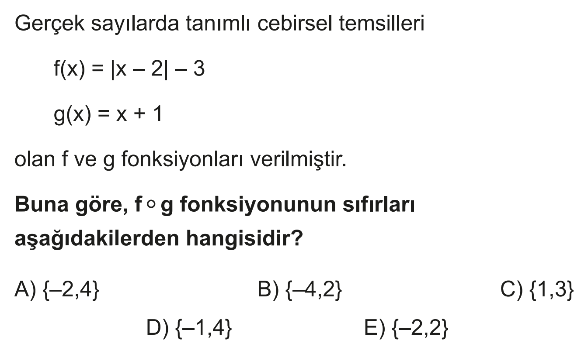
Çözüm
- $(f\circ g)(x)=|x+1-2|-3=|x-1|-3$.
- $|x-1|=3\Rightarrow x-1=\pm3$.
- $x=4$ veya $x=-2$: $\{-2,4\}$ (A).
Cevap: A
Soru 2Cevap: E
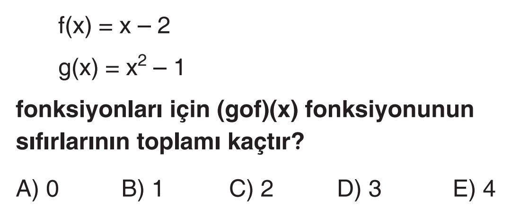
Çözüm
- $(g\circ f)(x)=(x-2)^2-1$.
- $(x-2)^2=1\Rightarrow x=1$ veya $x=3$.
- Toplam $4$ (E).
Cevap: E
Soru 3Cevap: C
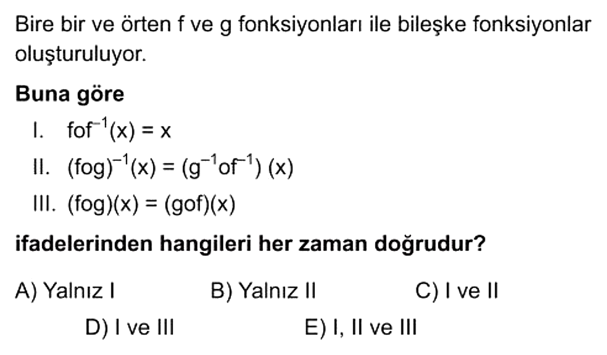
Çözüm
- I: $f\circ f^{-1}=I$, doğru.
- II: $(f\circ g)^{-1}=g^{-1}\circ f^{-1}$, doğru.
- III: değişme özelliği yoktur, her zaman doğru değil. Cevap I ve II (C).
Cevap: C
Soru 4Cevap: D
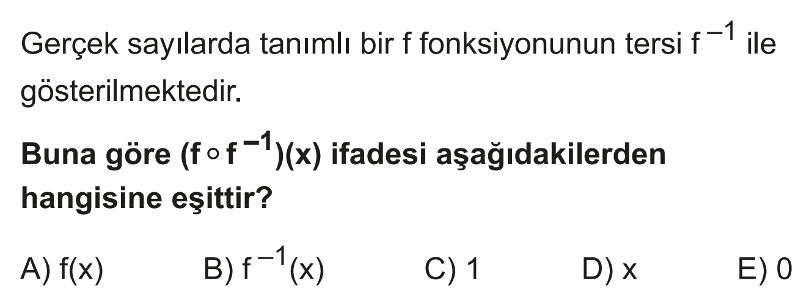
Çözüm
- $f^{-1}$, $f$'nin yaptığını geri alır.
- $(f\circ f^{-1})(x)=f(f^{-1}(x))$.
- $=x$ (D).
Cevap: D
Soru 5Cevap: B
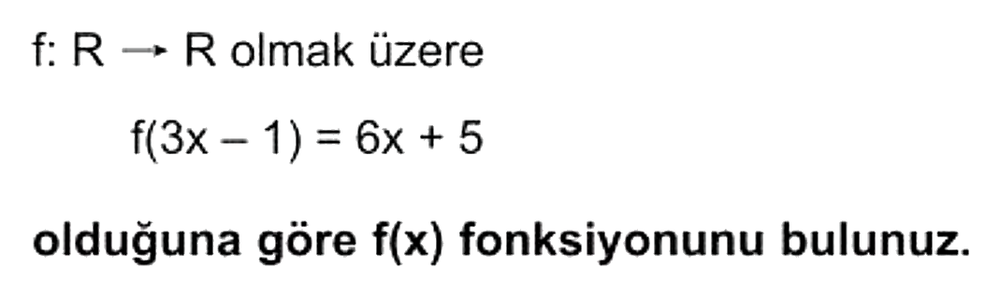
A)$2x+5$B)$2x+7$C)$6x+5$D)$2x+3$E)$3x+7$
Çözüm
- $3x-1=t\Rightarrow x=\dfrac{t+1}{3}$.
- $f(t)=6\cdot\dfrac{t+1}{3}+5=2t+2+5$.
- $f(x)=2x+7$ (B).
Cevap: B
Soru 6Cevap: D
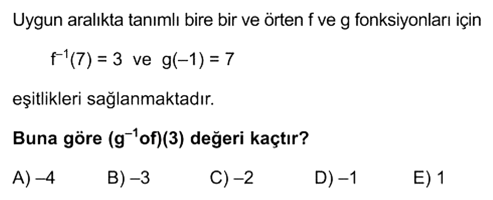
Çözüm
- $f^{-1}(7)=3\Rightarrow f(3)=7$.
- $g(-1)=7\Rightarrow g^{-1}(7)=-1$.
- $(g^{-1}\circ f)(3)=-1$ (D).
Cevap: D
Soru 7Cevap: D
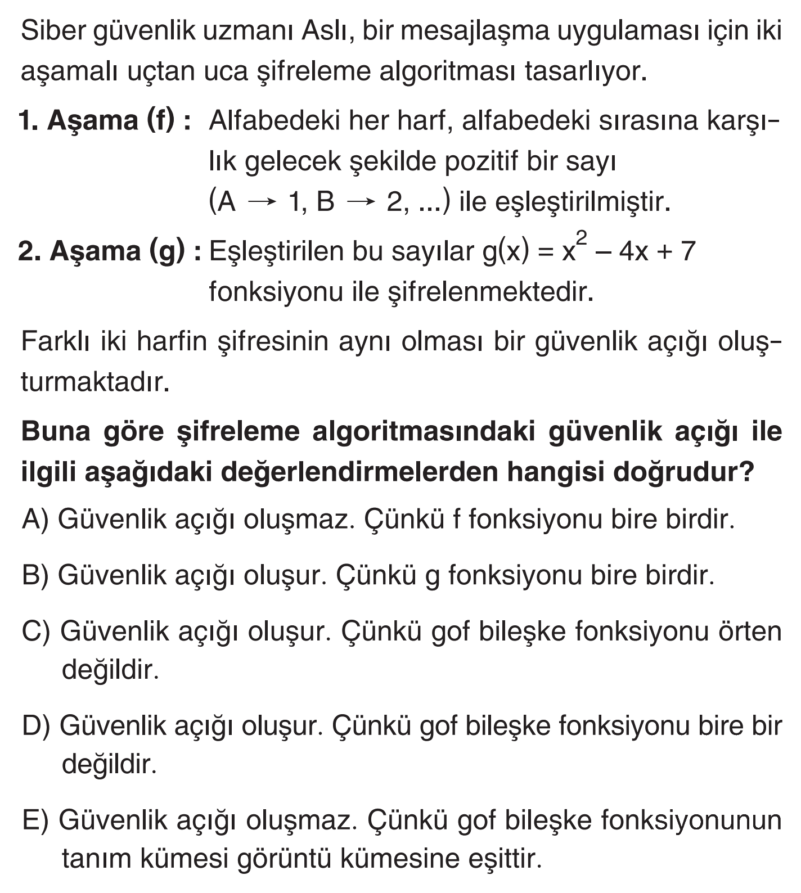
Çözüm
- $f$ (harf→sıra) bire birdir.
- $g(x)=x^2-4x+7$: $g(1)=g(3)=4$, bire bir değildir.
- İki farklı harf aynı şifreyi alabilir: $g\circ f$ bire bir değil, açık oluşur (D).
Cevap: D
Soru 8Cevap: B
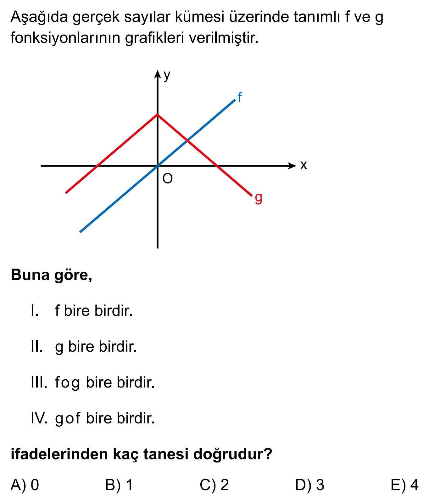
Çözüm
- $f$ artan doğru: bire bir (I doğru); $g$ ters V biçiminde: bire bir değil (II yanlış).
- $f\circ g$: içteki $g$ bire bir değil, bileşke de değil (III yanlış).
- $g\circ f$: $f$ tüm gerçek sayıları alır, $g$'nin eşit değer verdiği noktalara ulaşılır; bire bir değil (IV yanlış). $1$ tane (B).
Cevap: B
Soru 9Cevap: B
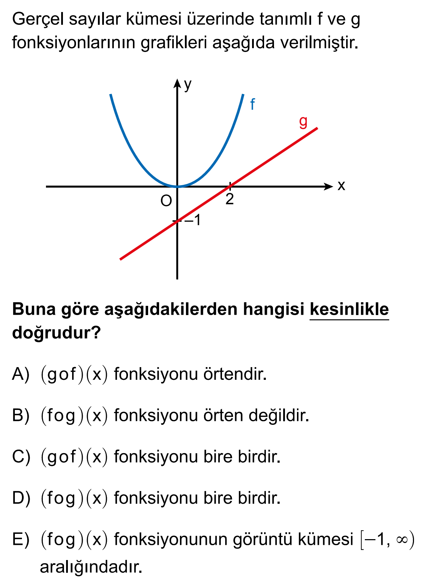
Çözüm
- $f(x)\ge0$ olduğundan $(f\circ g)(x)=f(g(x))\ge0$.
- $f\circ g$ negatif değer alamaz: $\mathbb R$'ye örten değildir.
- Kesinlikle doğru: $f\circ g$ örten değildir (B).
Cevap: B
Soru 10Cevap: C
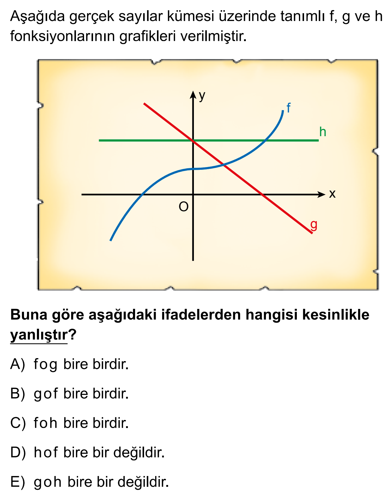
Çözüm
- $f$ artan, $g$ azalan: ikisi de bire bir; $h$ sabit: bire bir değil.
- $f\circ g$, $g\circ f$ bire birdir; $h\circ f$, $g\circ h$ sabittir, bire bir değildir.
- $f\circ h$ sabit olduğundan "bire birdir" kesinlikle yanlış (C).
Cevap: C
Soru 11Cevap: A
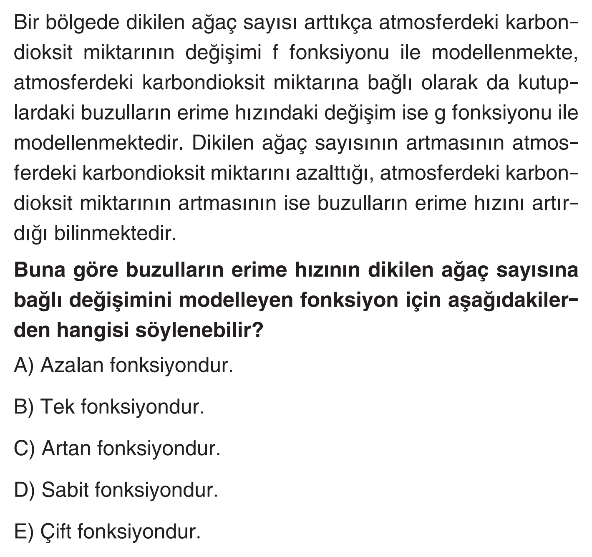
Çözüm
- Ağaç sayısı arttıkça karbondioksit azalır: $f$ azalan.
- Karbondioksit arttıkça erime hızı artar: $g$ artan.
- $g\circ f$: artan∘azalan, azalan fonksiyondur (A).
Cevap: A
Soru 12Cevap: E
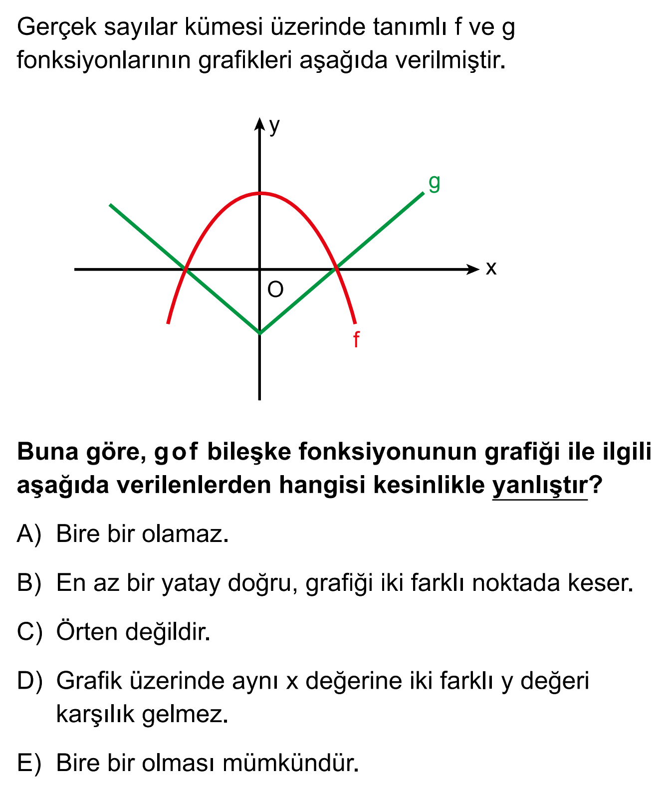
Çözüm
- $f$ $y$ eksenine göre simetrik parabol: $f$ çift.
- İç fonksiyon çift olduğundan $g\circ f$ de çifttir: $x$ ve $-x$ aynı değeri verir.
- $g\circ f$ bire bir olamaz; "bire bir olması mümkündür" kesinlikle yanlış (E).
Cevap: E
Soru 13Cevap: D
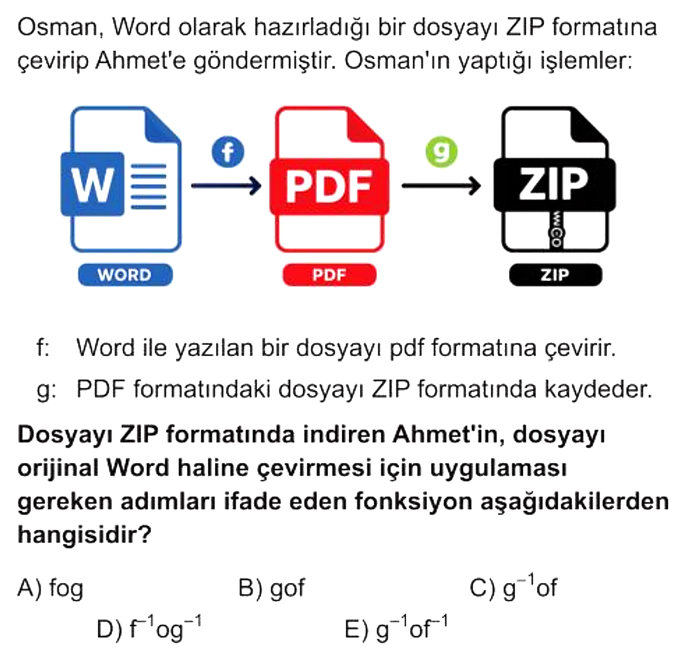
Çözüm
- Word → PDF → ZIP dönüşümü $g\circ f$'dir.
- Geri dönüş $(g\circ f)^{-1}=f^{-1}\circ g^{-1}$.
- Cevap D.
Cevap: D
Soru 14Cevap: C
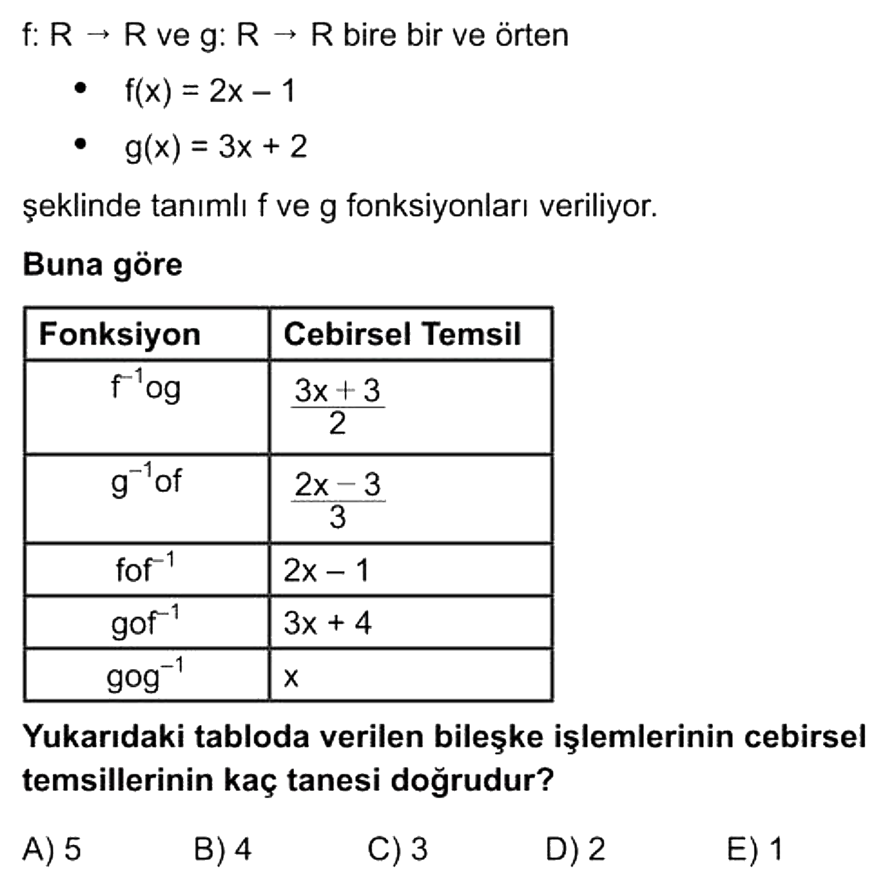
Çözüm
- $f^{-1}(x)=\dfrac{x+1}{2}$, $g^{-1}(x)=\dfrac{x-2}{3}$: $f^{-1}\circ g=\dfrac{3x+3}{2}$ ✓, $g^{-1}\circ f=\dfrac{2x-3}{3}$ ✓.
- $f\circ f^{-1}=x$ ✗ (tabloda $2x-1$); $g\circ f^{-1}=\dfrac{3x+7}{2}$ ✗.
- $g\circ g^{-1}=x$ ✓: $3$ tanesi doğru (C).
Cevap: C
Soru 15Cevap: C
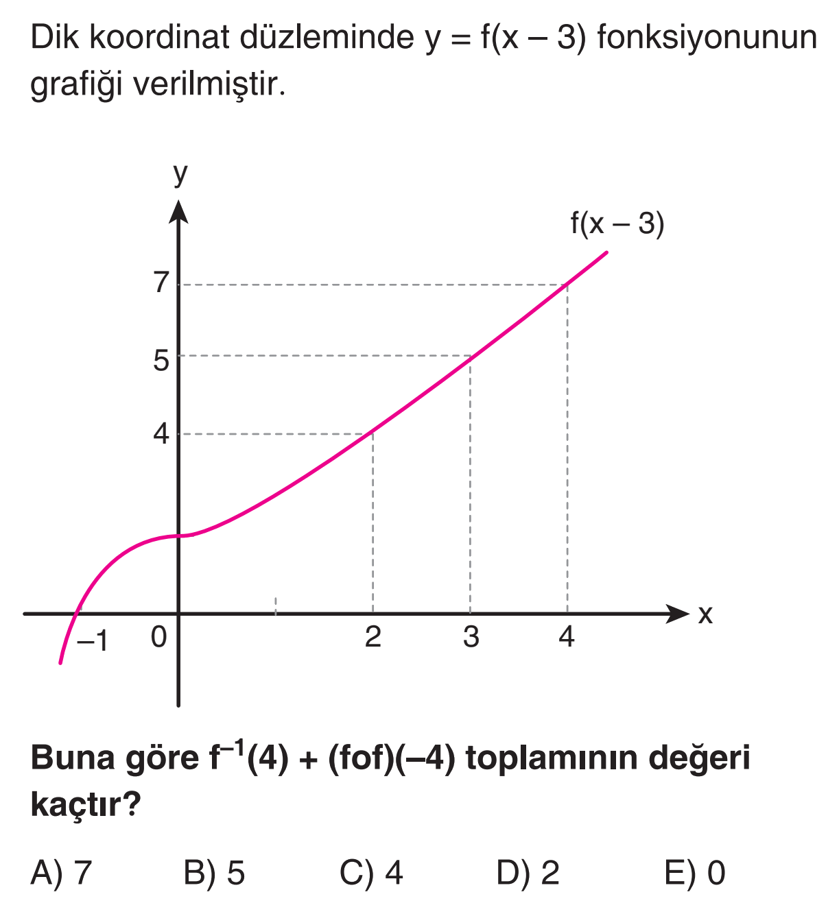
Çözüm
- $f(x-3)$ grafiğinde $x=2$ için $4$: $f(-1)=4$, yani $f^{-1}(4)=-1$.
- $x=-1$ için $0$: $f(-4)=0$; $x=3$ için $5$: $f(0)=5$.
- $(f\circ f)(-4)=f(0)=5$; toplam $-1+5=4$ (C).
Cevap: C
Soru 16Cevap: A
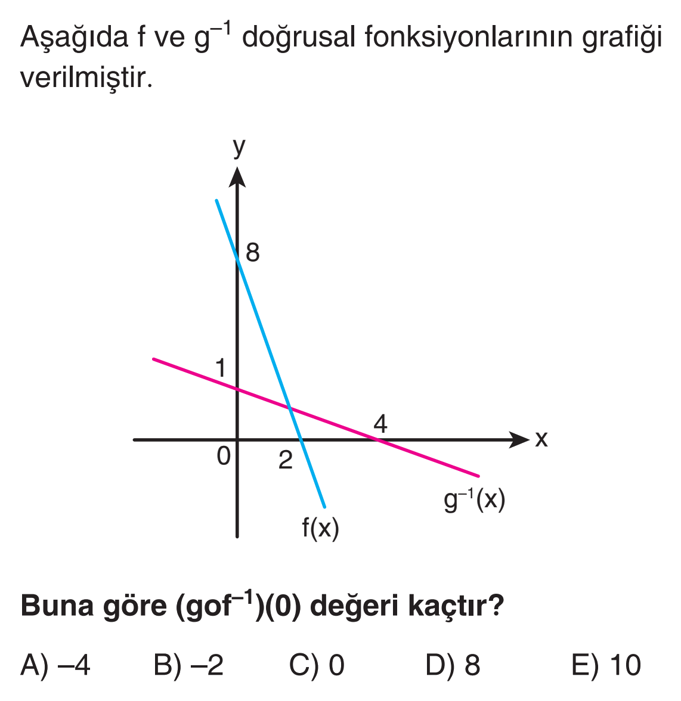
Çözüm
- $f$ doğrusu $(0,8)$ ve $(2,0)$'dan geçer: $f^{-1}(0)=2$.
- $(g\circ f^{-1})(0)=g(2)$; $g(2)=k\iff g^{-1}(k)=2$.
- $g^{-1}(x)=1-\dfrac x4=2\Rightarrow x=-4$ (A).
Cevap: A
Soru 17Cevap: A
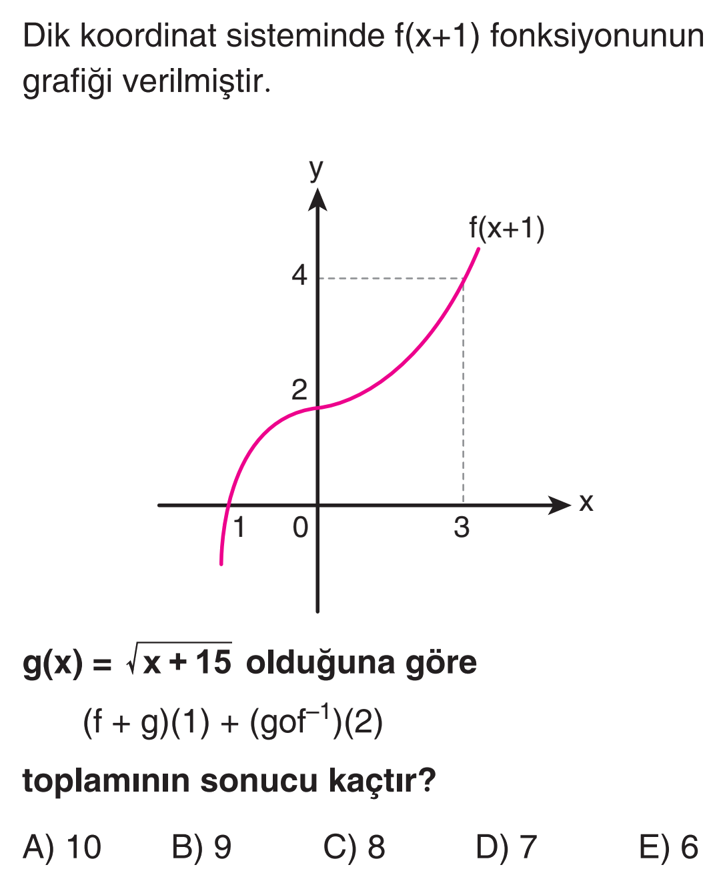
Çözüm
- Grafikten $x=0$ için $f(1)=2$, $x=3$ için $f(4)=4$.
- $(f+g)(1)=2+\sqrt{16}=6$.
- $f^{-1}(2)=1$: $(g\circ f^{-1})(2)=g(1)=4$; toplam $10$ (A).
Cevap: A
Soru 18Cevap: B
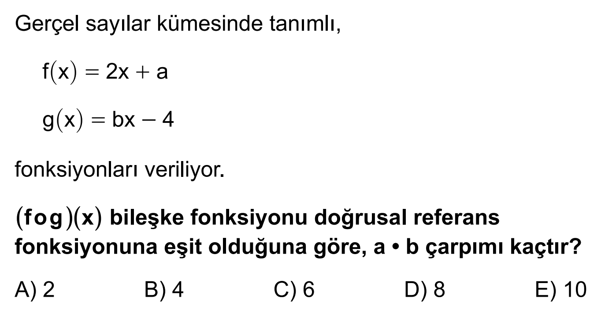
Çözüm
- $(f\circ g)(x)=2(bx-4)+a=2bx+a-8$.
- Birim fonksiyon: $2b=1$, $a-8=0$.
- $a=8$, $b=\dfrac12$: $a\cdot b=4$ (B).
Cevap: B
Soru 19Cevap: D
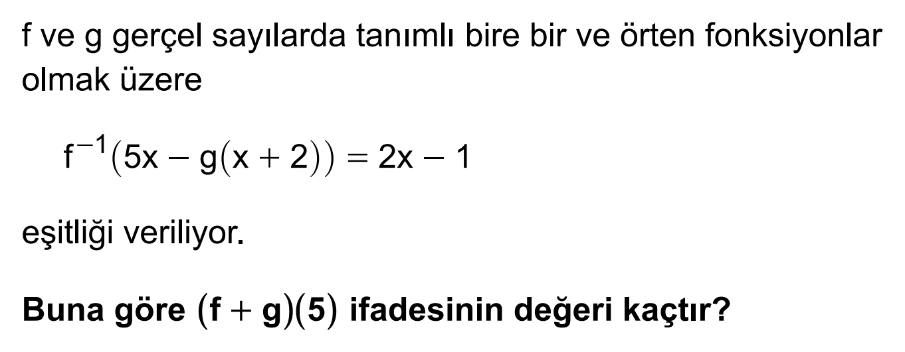
A)$5$B)$9$C)$12$D)$15$E)$20$
Çözüm
- Her iki tarafa $f$ uygulanır: $5x-g(x+2)=f(2x-1)$.
- $x=3$: $15-g(5)=f(5)$.
- $(f+g)(5)=15$ (D).
Cevap: D
Soru 20Cevap: D
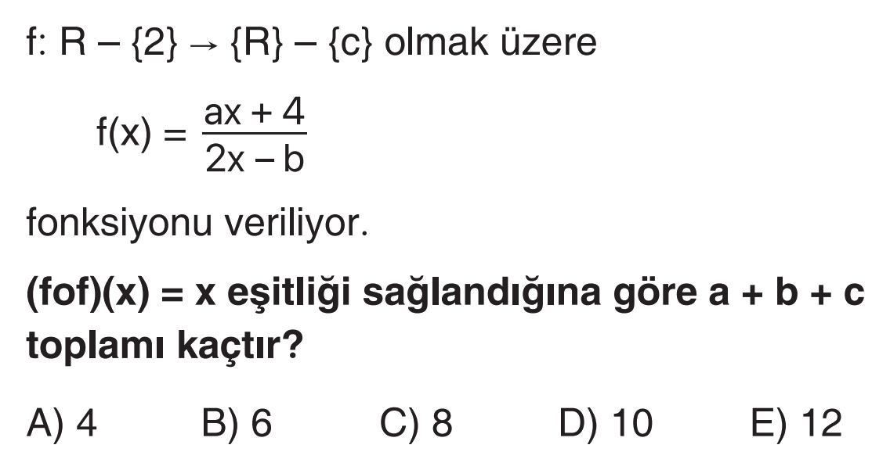
Çözüm
- $f\circ f=I$ ise $f=f^{-1}$: $\dfrac{ax+4}{2x-b}$ için $a=b$.
- Tanımsız nokta $x=2$: $\dfrac b2=2\Rightarrow b=4$, $a=4$.
- Değer kümesinden çıkan $c=\dfrac a2=2$; $a+b+c=10$ (D).
Cevap: D